Greetings
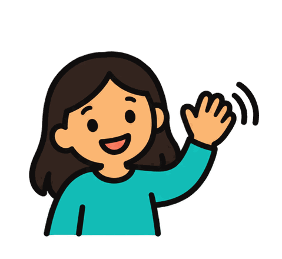
Hello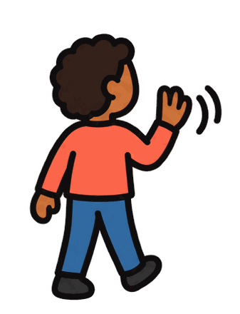
Goodbye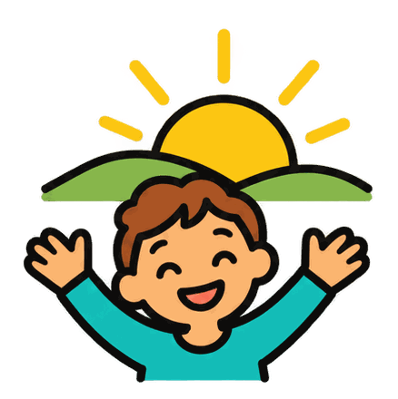
Good morningGood night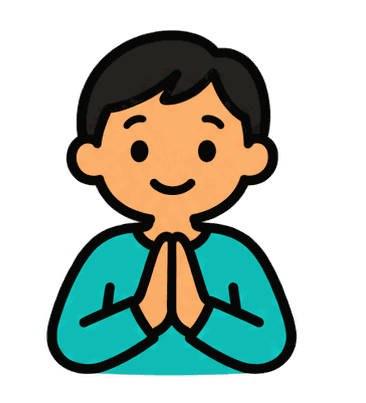
Please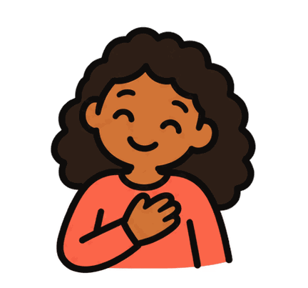
Thank youYou're welcome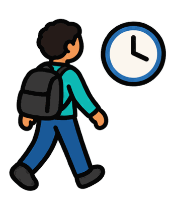
See you later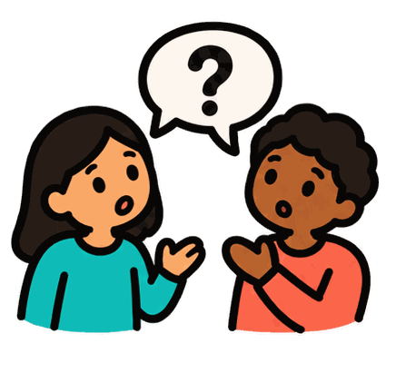
What's your name?I Need
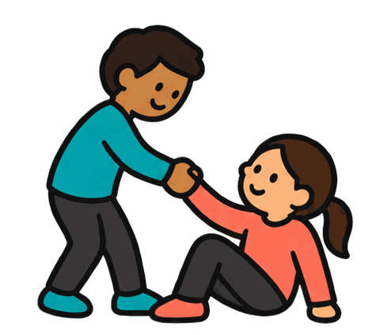
Help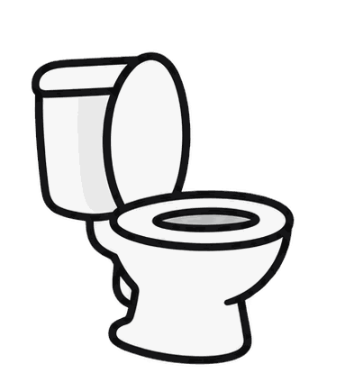
Toilet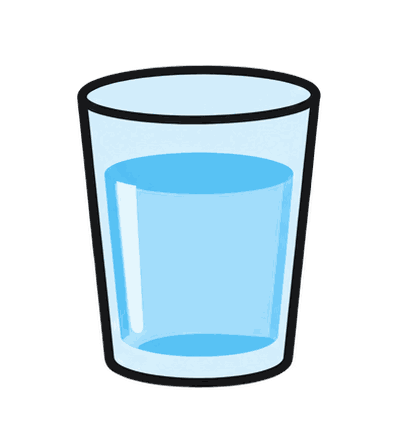
Water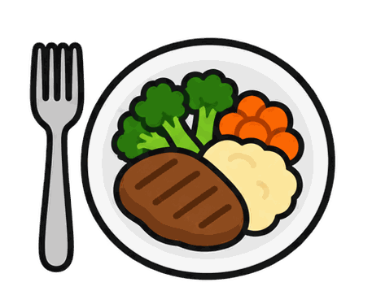
Food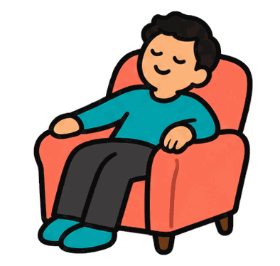
A break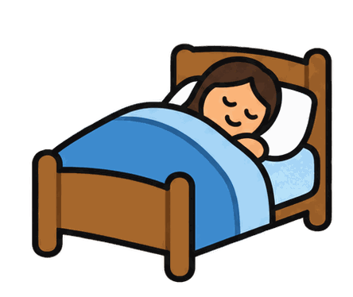
Sleep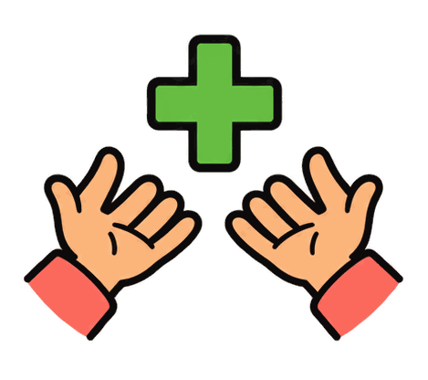
More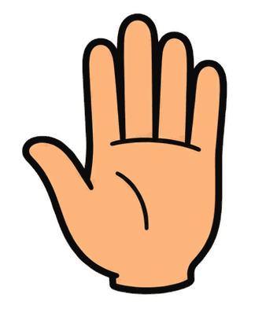
Stop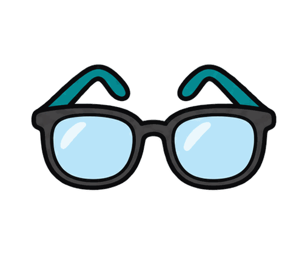
My glassesMy Answer
Yes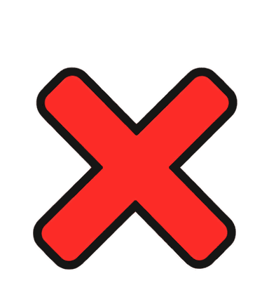
No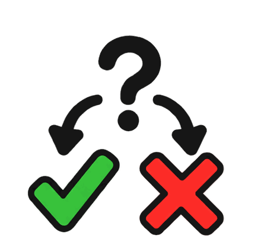
Maybe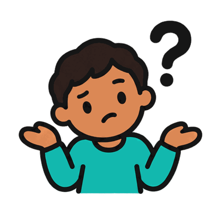
I don't know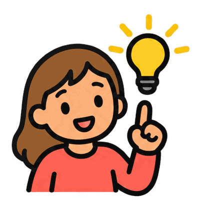
I understand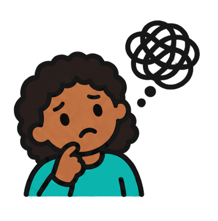
I don't understandI like itI don't like it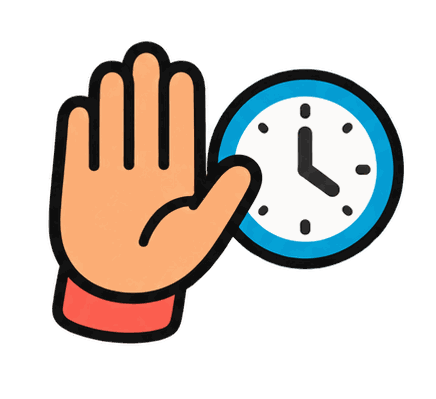
Not now Breakfast
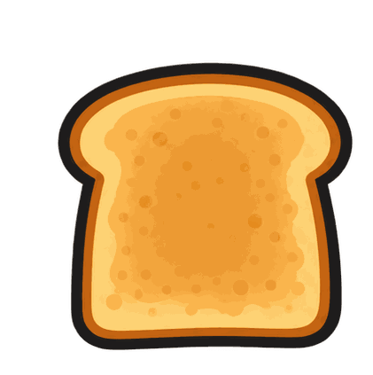
Toast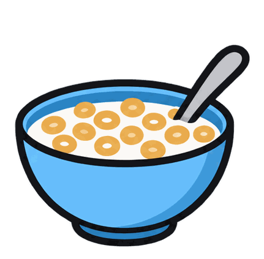
Cereal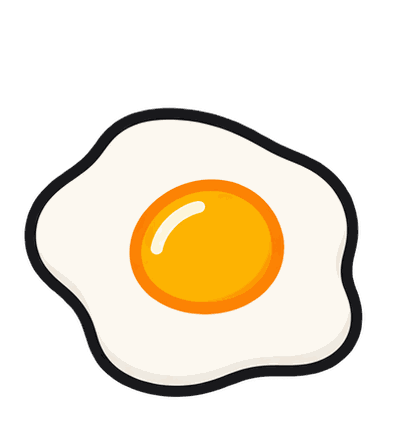
Eggs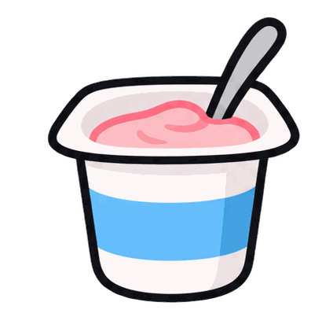
Yogurt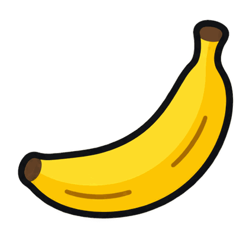
Banana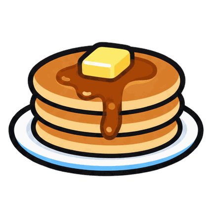
Pancakes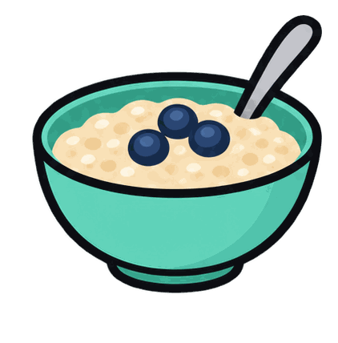
Porridge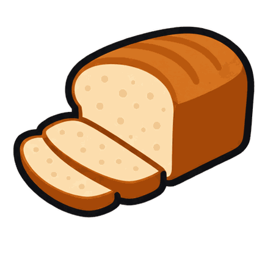
Bread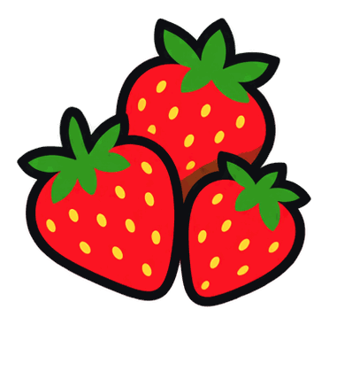
StrawberriesLunch
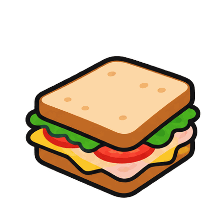
Sandwich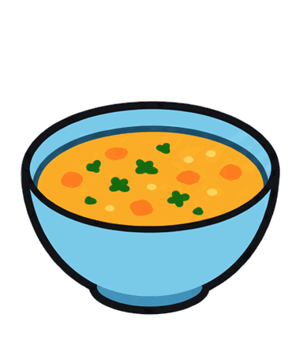
Soup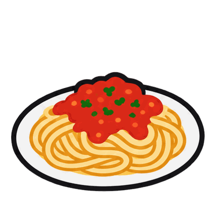
Pasta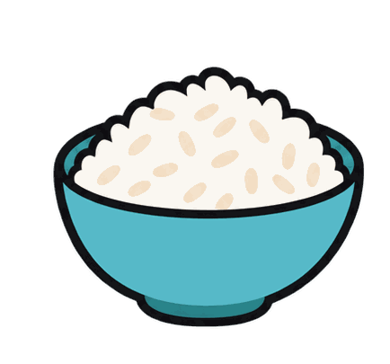
Rice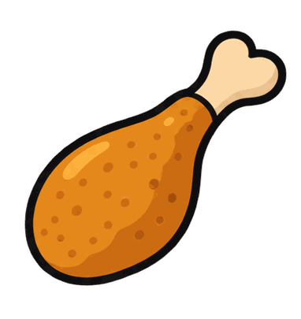
Chicken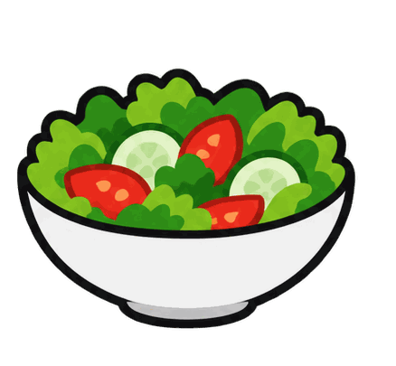
Salad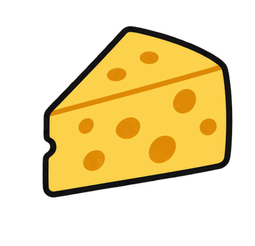
Cheese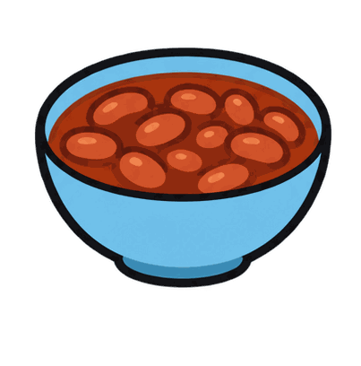
Beans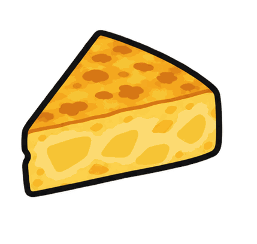
TortillaDinner
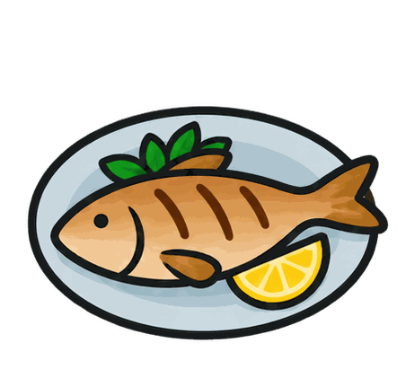
Fish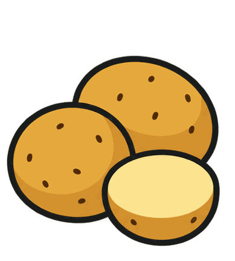
Potatoes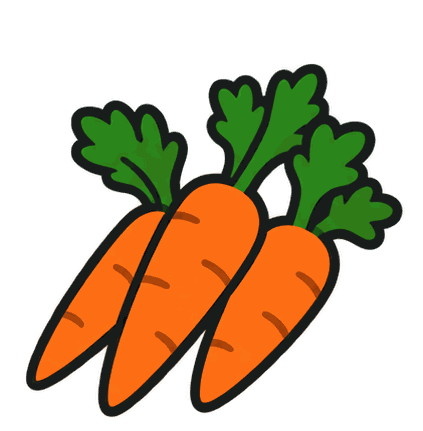
Carrots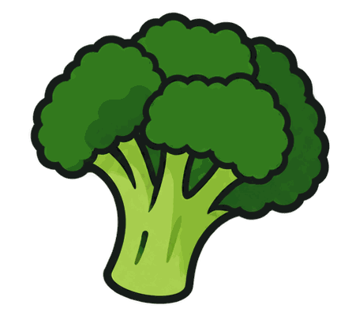
Broccoli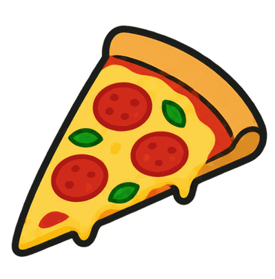
Pizza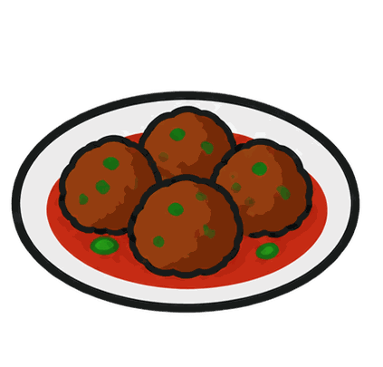
Meatballs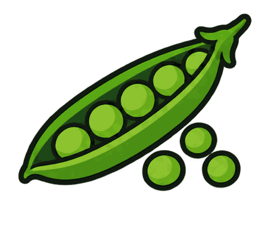
Peas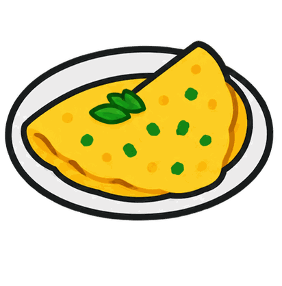
Omelette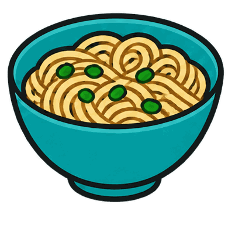
NoodlesDrinks
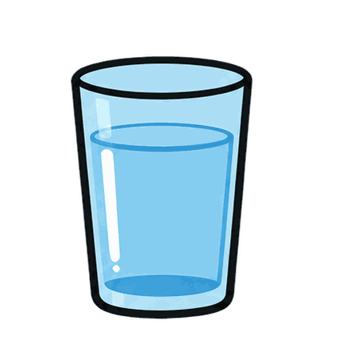
WaterMilkOrange juiceApple juiceSmoothieHot chocolateTeaLemonadeMilkshakeSnacks
AppleCrackersBiscuitPopcornGrapesCheeseOrangeRaisinsCucumber
At Mealtimes
I'm hungryI'm thirstyMore, pleaseAll doneToo hotCut it upSpoonForkNapkin
Things to Do
ReadDrawListen to musicDanceGo for a walkCookMake a puzzleWatch TVRest
Getting dressed
T-shirtTrousersUnderwearSocksShoesJumperCoatHatHelp me dress
Playtime
BallBubblesBlocksDollToy carTrain setPlay doughSwingSlide
Arts & crafts
DrawPaintColour inCutGluePaperCrayonsStickersPlay dough
Places to Go
HomeSchoolParkShopLibrarySwimming poolBeachPlaygroundGrandparents' house
At the shops
Shopping listBasketTrolleyI want thisHow much?PayReceiptShopping bagAll done
Transport
CarBusTrainBicycleTaxiPlaneBoatTramOn foot
How I Feel
HappySadAngryWorriedTiredExcitedCalmScaredUnwell
Feeling unwell
My head hurtsMy tummy hurtsMy throat hurtsMy ear hurtsI feel sickI feel hotI need a tissueI need to restI need help
What would Help
QuietA hugSome spaceHeadphonesA fidget toyDeep breathsA breakTalk to someoneDim the lights
Home
HouseLiving roomKitchenBedroomBathroomGardenKeysClean upLaundry
School
SchoolTeacherClassroomReadWriteListenPlaygroundLunch timeSchool bag
Work
WorkDeskMeetingTasksBreakHelpFinishedTimeGo home
Technology
TabletComputerPhoneHeadphonesKeyboardMouseChargerCameraWi-Fi
Health
DoctorNurseMedicineThermometerPlasterWash handsDentistRestAppointment
Saludos
HolaAdiósBuenos díasBuenas nochesPor favorGraciasDe nadaHasta luego¿Cómo te llamas?
Necesito
AyudaIr al bañoAguaComidaUn descansoDormirMásPararMis gafas
Mi respuesta
SíNoQuizásNo lo séLo entiendoNo lo entiendoMe gustaNo me gustaAhora no
Desayuno
TostadasCerealesHuevosYogurPlátanoTortitasAvenaPanFresas
Almuerzo
SándwichSopaPastaArrozPolloEnsaladaQuesoFrijolesTortilla
Cena
PescadoPatatasZanahoriasBrócoliPizzaAlbóndigasGuisantesTortilla francesaFideos
Bebidas
AguaLecheZumo de naranjaZumo de manzanaBatido de frutasChocolate calienteTéLimonadaBatido de leche
Tentempiés
ManzanaGalletas saladasGalletaPalomitasUvasQuesoNaranjaPasasPepino
A la hora de comer
Tengo hambreTengo sedMás, por favorHe terminadoEstá muy calienteCórtaloCucharaTenedorServilleta
Cosas que hacer
LeerDibujarEscuchar músicaBailarDar un paseoCocinarHacer un puzleVer la teleDescansar
Vestirse
CamisetaPantalonesRopa interiorCalcetinesZapatosJerseyAbrigoGorroAyúdame a vestirme
Hora de jugar
PelotaBurbujasBloquesMuñecaCoche de jugueteTren de juguetePlastilinaColumpioTobogán
Arte y manualidades
DibujarPintarColorearRecortarPegarPapelCerasPegatinasPlastilina
Lugares adonde ir
CasaEscuelaParqueTiendaBibliotecaPiscinaPlayaParque infantilCasa de mis abuelos
En las tiendas
Lista de la compraCestaCarritoQuiero esto¿Cuánto cuesta?PagarReciboBolsa de la compraHe terminado
Transporte
CocheAutobúsTrenBicicletaTaxiAviónBarcoTranvíaA pie
Cómo me siento
FelizTristeEnfadado/aPreocupado/aCansado/aEmocionado/aTranquilo/aAsustado/aMe siento mal
Me siento mal
Me duele la cabezaMe duele la barrigaMe duele la gargantaMe duele el oídoTengo náuseasTengo calorNecesito un pañueloNecesito descansarNecesito ayuda
Qué me ayudaría
SilencioUn abrazoEspacio para míAuricularesUn juguete sensorialRespirar hondoUn descansoHablar con alguienBajar la luz
Casa
CasaSalónCocinaDormitorioBañoJardínLlavesLimpiarColada
Escuela
EscuelaProfesorAulaLeerEscribirEscucharPatioHora de comerMochila
Trabajo
TrabajoEscritorioReuniónTareasDescansoAyudaTerminadoHoraIr a casa
Tecnología
TabletaOrdenadorTeléfonoAuricularesTecladoRatónCargadorCámaraWifi
Salud
MédicoEnfermeroMedicinaTermómetroTiritaLavarse las manosDentistaDescansarCita